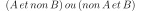

Note
Go to the end to download the full example code
L’énigme d’Einstein et sa résolution#
Résolution de l’énigme L’énigme d’Einstein. Implémentatin d’une solution à base de règles.
Je la reproduis ici :
Il y a cinq maisons de cinq couleurs différentes. Dans chacune de ces maisons, vit une personne de nationalité différente. Chacune de ces personnes boit une boisson différente, fume un cigare différent et a un animal domestique différent.
L’Anglais vit dans la maison rouge.
Le Suédois a des chiens.
Le Danois boit du thé.
La maison verte est à gauche de la maison blanche.
Le propriétaire de la maison verte boit du café.
La personne qui fume des Pall Mall a des oiseaux.
Le propriétaire de la maison jaune fume des Dunhill.
La personne qui vit dans la maison du centre boit du lait.
Le Norvégien habite dans la première maison.
L’homme qui fume des Blend vit à côté de celui qui a des chats.
L’homme qui a un cheval est le voisin de celui qui fume des Dunhill.
Le propriétaire qui fume des Blue Master boit de la bière.
L’Allemand fume des prince.
Le Norvégien vit juste à côté de la maison bleue.
L’homme qui fume des Blend a un voisin qui boit de l’eau.
Question : Qui a le poisson ?
Après quelques essais, une bonne feuille de papier, on arrive à reconstituer la solution après de nombreuses déductions logiques et quelques essais. On peut voir aussi ce jeu comme un puzzle : chaque configuration est un pièce du puzzle dont la forme des bords est définie par toutes ces règles. Il faut trouver le seul emboîtement possible sachant que parfois, une pièce peut s’emboîter avec plusieurs mais qu’il n’existe qu’une façon de les emboîter toutes ensemble. Ecrire un programme qui résoud ce problème revient à s’intéresser à deux problèmes :
Comment définir une pièce du puzzle ?
Comment parcourir toutes les combinaisons possibles ?
Chaque règle ou pièce de puzzle peut être exprimer comme une clause. Pour notre problème, chaque pièce du puzzle est simplement décrite par un attribut (rouge, norvégien) et un numéro de maisons (1 à 5). Les règles définissent la compatibilité de deux pièces. On peut regrouper ces règles en cinq catégories :
Un attribut est à la position p (règle 9).
Deux attributs sont équivalents (règle 1).
Deux attributs sont voisins (règle 11).
Deux attributs sont ordonnés par rapport aux positions (règle 4).
Deux attributs font partie du même ensemble et sont exclusives : on ne peut pas être l’un et l’autre à la fois (rouge et jaune par exemple).
Une fois que chaque règle a été exprimée dans une de ces cinq catégories, il faut définir l’association de deux règles (ou clause) pour former une clause plus complexe. Trois cas possibles :
Deux clauses sont compatibles : on peut avoir l’une et l’autre.
Deux clauses sont incompatibles : on ne peut avoir l’une et l’autre.
Dans le premier cas, la clause résultante est simplement qu’on peut la clause A et la clause B : :math:A et B. Dans le second cas, il existe deux possibilités, on peut avoir l’une et l’opposé de l’autre ou l’inverse : .
Avec cette description, il est plus facile d’exprimer le problème avec des objets informatiques ce que fait le programme suivant. Il explicite ensuite toutes les configurations compatibles avec une règle donnée (mais pas toutes ensembles).
Note
L’énigme d’Einstein est une énigme comme celle que résoud Hermionne dans le premier tome de Harry Potter (voir 2023-08-09 : l’énigme d’Hermionne).
On commence par la fonction permutation: qui énumère les permutations d’un ensemble :
import copy
from io import StringIO
import pandas
Fonction permutation#
def permutation(nb):
per = []
p = [i for i in range(0, nb)]
while p[0] < nb:
cont = False
for i in range(1, nb):
if p[i] in p[0:i]:
cont = True
break
if not cont:
per.append(copy.copy(p))
p[nb - 1] += 1
for j in range(nb - 1, 0, -1):
if p[j] >= nb:
p[j] = 0
p[j - 1] += 1
return per
La classe Rule#
class Rule:
"""
This class defines a constraint of the problem or a clause.
There are 5 different types of clauses described by Einstein's enigma
each of them is described by a different class.
"""
def __init__(self):
# name of the rule
self.name = None
# set of clauses
self.set = None
def genere(self):
"""
Generates all possible clauses (list of lists)
(`l[0][0]` et `l[0][1]`) ou (`l[1][0]` et `l[1][1]`),
a clause is a triplet of
`(person, (property, category))`.
"""
return None
def __str__(self):
"""
display
"""
if self.name is not None:
if "clauses" not in self.__dict__:
s = self.name + " \t: "
a = self.genere()
for al in a:
st = "\n ou " + str(al)
if len(st) > 260:
st = st[:260] + "..."
s += st
if len(s) > 1000:
break
return s
else:
s = self.name + " \t: " + str(self.set)
for al in self.clauses:
st = "\n ou " + str(al)
if len(st) > 260:
st = st[:260] + "..."
s += st
if len(s) > 1000:
break
return s
return "None"
def combine(self, cl1, cl2):
"""
Combines two clauses, two cases:
1. nothing in common or everything in common --> concatenation of clauses
2. a position or a property in common --> null clause
:param cl1: clause 1
:param cl2: clause 2
:return: the new clause
A clause is a `Rule`.
"""
# incompatibility
for p1 in cl1:
for p2 in cl2:
if p1[1][0] == p2[1][0]: # same property
if p1[0] != p2[0]: # but different positions
return None
if p1[0] == p2[0]: # same person
if p1[1][1] == p2[1][1] and p1[1][0] != p2[1][0]:
# same category but different properties
return None
# compatibility
r = copy.deepcopy(cl1)
for c in cl2:
if c not in r:
r.append(c)
return r
def combine_cross_sets(self, set1, set2):
"""
Combines two sets of clauses.
:param set1: set of clauses 1
:param set2: set of clauses 2
:return: combination
"""
if len(set1) == 0:
return copy.deepcopy(set2)
if len(set2) == 0:
return copy.deepcopy(set1)
res = []
for cl1 in set1:
for cl2 in set2:
r = self.combine(cl1, cl2)
if r is not None:
res.append(r)
return res
Explicit rules#
class RulePosition(Rule):
"""
p1 at position
"""
def __init__(self, p1, pos):
self.set = [p1]
self.name = "position"
self.position = pos
def genere(self):
"""
overrides method ``genere``
"""
return [[(self.position, self.set[0])]]
class RuleEquivalence(Rule):
"""
p1 equivalent to p2
"""
def __init__(self, p1, p2):
self.set = [p1, p2]
self.name = "equivalence"
def genere(self):
"""
overrides method ``genere``
"""
li = []
for i in range(0, 5):
li.append([(i, self.set[0]), (i, self.set[1])])
return li
class RuleVoisin(Rule):
"""
p1 and p2 are neighbors
"""
def __init__(self, p1, p2):
self.set = [p1, p2]
self.name = "voisin"
def genere(self):
"""
overrides method ``genere``
"""
li = []
for i in range(0, 4):
li.append([(i, self.set[0]), (i + 1, self.set[1])])
li.append([(i + 1, self.set[0]), (i, self.set[1])])
return li
class RuleAvant(Rule):
"""
p1 before p2
"""
def __init__(self, p1, p2):
self.set = [p1, p2]
self.name = "avant"
def genere(self):
"""
overrides method ``genere``
"""
li = []
for j in range(1, 5):
for i in range(0, j):
li.append([(i, self.set[0]), (j, self.set[1])])
return li
class RuleEnsemble(Rule):
"""
permutation of the elements of a category
"""
def __init__(self, set, categorie):
self.set = [(s, categorie) for s in set]
self.name = "ensemble"
def genere(self):
"""
overrides method ``genere``
"""
li = []
per = permutation(5)
for p in per:
tl = []
for i in range(0, len(p)):
tl.append((i, self.set[p[i]]))
li.append(tl)
return li
Description du problème avec ce code#
def find(p):
for i in range(0, len(ensemble)):
if p in ensemble[i]:
return (p, i)
return None
ttcouleur = ["jaune", "bleu", "rouge", "blanc", "vert"]
ttnationalite = ["danois", "norvegien", "anglais", "allemand", "suedois"]
ttboisson = ["eau", "the", "lait", "cafe", "biere"]
ttcigare = ["Dunhill", "Blend", "Pall Mall", "Prince", "Bluemaster"]
ttanimal = ["chats", "cheval", "oiseaux", "poisson", "chiens"]
ensemble = [ttcouleur, ttnationalite, ttboisson, ttcigare, ttanimal]
Les règles.
regle = []
regle.append(RulePosition(find("lait"), 2))
regle.append(RulePosition(find("norvegien"), 0))
regle.append(RuleEquivalence(find("Pall Mall"), find("oiseaux")))
regle.append(RuleEquivalence(find("anglais"), find("rouge")))
regle.append(RuleEquivalence(find("suedois"), find("chiens")))
regle.append(RuleEquivalence(find("danois"), find("the")))
regle.append(RuleEquivalence(find("vert"), find("cafe")))
regle.append(RuleEquivalence(find("jaune"), find("Dunhill")))
regle.append(RuleEquivalence(find("biere"), find("Bluemaster")))
regle.append(RuleEquivalence(find("allemand"), find("Prince")))
regle.append(RuleVoisin(find("Dunhill"), find("cheval")))
regle.append(RuleVoisin(find("norvegien"), find("bleu")))
regle.append(RuleVoisin(find("Blend"), find("eau")))
regle.append(RuleVoisin(find("Blend"), find("chats")))
regle.append(RuleAvant(find("vert"), find("blanc")))
regle.append(RuleEnsemble(ttcouleur, 0))
regle.append(RuleEnsemble(ttnationalite, 1))
regle.append(RuleEnsemble(ttboisson, 2))
regle.append(RuleEnsemble(ttcigare, 3))
regle.append(RuleEnsemble(ttanimal, 4))
for r in regle:
print(r)
position :
ou [(2, ('lait', 2))]
position :
ou [(0, ('norvegien', 1))]
equivalence :
ou [(0, ('Pall Mall', 3)), (0, ('oiseaux', 4))]
ou [(1, ('Pall Mall', 3)), (1, ('oiseaux', 4))]
ou [(2, ('Pall Mall', 3)), (2, ('oiseaux', 4))]
ou [(3, ('Pall Mall', 3)), (3, ('oiseaux', 4))]
ou [(4, ('Pall Mall', 3)), (4, ('oiseaux', 4))]
equivalence :
ou [(0, ('anglais', 1)), (0, ('rouge', 0))]
ou [(1, ('anglais', 1)), (1, ('rouge', 0))]
ou [(2, ('anglais', 1)), (2, ('rouge', 0))]
ou [(3, ('anglais', 1)), (3, ('rouge', 0))]
ou [(4, ('anglais', 1)), (4, ('rouge', 0))]
equivalence :
ou [(0, ('suedois', 1)), (0, ('chiens', 4))]
ou [(1, ('suedois', 1)), (1, ('chiens', 4))]
ou [(2, ('suedois', 1)), (2, ('chiens', 4))]
ou [(3, ('suedois', 1)), (3, ('chiens', 4))]
ou [(4, ('suedois', 1)), (4, ('chiens', 4))]
equivalence :
ou [(0, ('danois', 1)), (0, ('the', 2))]
ou [(1, ('danois', 1)), (1, ('the', 2))]
ou [(2, ('danois', 1)), (2, ('the', 2))]
ou [(3, ('danois', 1)), (3, ('the', 2))]
ou [(4, ('danois', 1)), (4, ('the', 2))]
equivalence :
ou [(0, ('vert', 0)), (0, ('cafe', 2))]
ou [(1, ('vert', 0)), (1, ('cafe', 2))]
ou [(2, ('vert', 0)), (2, ('cafe', 2))]
ou [(3, ('vert', 0)), (3, ('cafe', 2))]
ou [(4, ('vert', 0)), (4, ('cafe', 2))]
equivalence :
ou [(0, ('jaune', 0)), (0, ('Dunhill', 3))]
ou [(1, ('jaune', 0)), (1, ('Dunhill', 3))]
ou [(2, ('jaune', 0)), (2, ('Dunhill', 3))]
ou [(3, ('jaune', 0)), (3, ('Dunhill', 3))]
ou [(4, ('jaune', 0)), (4, ('Dunhill', 3))]
equivalence :
ou [(0, ('biere', 2)), (0, ('Bluemaster', 3))]
ou [(1, ('biere', 2)), (1, ('Bluemaster', 3))]
ou [(2, ('biere', 2)), (2, ('Bluemaster', 3))]
ou [(3, ('biere', 2)), (3, ('Bluemaster', 3))]
ou [(4, ('biere', 2)), (4, ('Bluemaster', 3))]
equivalence :
ou [(0, ('allemand', 1)), (0, ('Prince', 3))]
ou [(1, ('allemand', 1)), (1, ('Prince', 3))]
ou [(2, ('allemand', 1)), (2, ('Prince', 3))]
ou [(3, ('allemand', 1)), (3, ('Prince', 3))]
ou [(4, ('allemand', 1)), (4, ('Prince', 3))]
voisin :
ou [(0, ('Dunhill', 3)), (1, ('cheval', 4))]
ou [(1, ('Dunhill', 3)), (0, ('cheval', 4))]
ou [(1, ('Dunhill', 3)), (2, ('cheval', 4))]
ou [(2, ('Dunhill', 3)), (1, ('cheval', 4))]
ou [(2, ('Dunhill', 3)), (3, ('cheval', 4))]
ou [(3, ('Dunhill', 3)), (2, ('cheval', 4))]
ou [(3, ('Dunhill', 3)), (4, ('cheval', 4))]
ou [(4, ('Dunhill', 3)), (3, ('cheval', 4))]
voisin :
ou [(0, ('norvegien', 1)), (1, ('bleu', 0))]
ou [(1, ('norvegien', 1)), (0, ('bleu', 0))]
ou [(1, ('norvegien', 1)), (2, ('bleu', 0))]
ou [(2, ('norvegien', 1)), (1, ('bleu', 0))]
ou [(2, ('norvegien', 1)), (3, ('bleu', 0))]
ou [(3, ('norvegien', 1)), (2, ('bleu', 0))]
ou [(3, ('norvegien', 1)), (4, ('bleu', 0))]
ou [(4, ('norvegien', 1)), (3, ('bleu', 0))]
voisin :
ou [(0, ('Blend', 3)), (1, ('eau', 2))]
ou [(1, ('Blend', 3)), (0, ('eau', 2))]
ou [(1, ('Blend', 3)), (2, ('eau', 2))]
ou [(2, ('Blend', 3)), (1, ('eau', 2))]
ou [(2, ('Blend', 3)), (3, ('eau', 2))]
ou [(3, ('Blend', 3)), (2, ('eau', 2))]
ou [(3, ('Blend', 3)), (4, ('eau', 2))]
ou [(4, ('Blend', 3)), (3, ('eau', 2))]
voisin :
ou [(0, ('Blend', 3)), (1, ('chats', 4))]
ou [(1, ('Blend', 3)), (0, ('chats', 4))]
ou [(1, ('Blend', 3)), (2, ('chats', 4))]
ou [(2, ('Blend', 3)), (1, ('chats', 4))]
ou [(2, ('Blend', 3)), (3, ('chats', 4))]
ou [(3, ('Blend', 3)), (2, ('chats', 4))]
ou [(3, ('Blend', 3)), (4, ('chats', 4))]
ou [(4, ('Blend', 3)), (3, ('chats', 4))]
avant :
ou [(0, ('vert', 0)), (1, ('blanc', 0))]
ou [(0, ('vert', 0)), (2, ('blanc', 0))]
ou [(1, ('vert', 0)), (2, ('blanc', 0))]
ou [(0, ('vert', 0)), (3, ('blanc', 0))]
ou [(1, ('vert', 0)), (3, ('blanc', 0))]
ou [(2, ('vert', 0)), (3, ('blanc', 0))]
ou [(0, ('vert', 0)), (4, ('blanc', 0))]
ou [(1, ('vert', 0)), (4, ('blanc', 0))]
ou [(2, ('vert', 0)), (4, ('blanc', 0))]
ou [(3, ('vert', 0)), (4, ('blanc', 0))]
ensemble :
ou [(0, ('jaune', 0)), (1, ('bleu', 0)), (2, ('rouge', 0)), (3, ('blanc', 0)), (4, ('vert', 0))]
ou [(0, ('jaune', 0)), (1, ('bleu', 0)), (2, ('rouge', 0)), (3, ('vert', 0)), (4, ('blanc', 0))]
ou [(0, ('jaune', 0)), (1, ('bleu', 0)), (2, ('blanc', 0)), (3, ('rouge', 0)), (4, ('vert', 0))]
ou [(0, ('jaune', 0)), (1, ('bleu', 0)), (2, ('blanc', 0)), (3, ('vert', 0)), (4, ('rouge', 0))]
ou [(0, ('jaune', 0)), (1, ('bleu', 0)), (2, ('vert', 0)), (3, ('rouge', 0)), (4, ('blanc', 0))]
ou [(0, ('jaune', 0)), (1, ('bleu', 0)), (2, ('vert', 0)), (3, ('blanc', 0)), (4, ('rouge', 0))]
ou [(0, ('jaune', 0)), (1, ('rouge', 0)), (2, ('bleu', 0)), (3, ('blanc', 0)), (4, ('vert', 0))]
ou [(0, ('jaune', 0)), (1, ('rouge', 0)), (2, ('bleu', 0)), (3, ('vert', 0)), (4, ('blanc', 0))]
ou [(0, ('jaune', 0)), (1, ('rouge', 0)), (2, ('blanc', 0)), (3, ('bleu', 0)), (4, ('vert', 0))]
ou [(0, ('jaune', 0)), (1, ('rouge', 0)), (2, ('blanc', 0)), (3, ('vert', 0)), (4, ('bleu', 0))]
ensemble :
ou [(0, ('danois', 1)), (1, ('norvegien', 1)), (2, ('anglais', 1)), (3, ('allemand', 1)), (4, ('suedois', 1))]
ou [(0, ('danois', 1)), (1, ('norvegien', 1)), (2, ('anglais', 1)), (3, ('suedois', 1)), (4, ('allemand', 1))]
ou [(0, ('danois', 1)), (1, ('norvegien', 1)), (2, ('allemand', 1)), (3, ('anglais', 1)), (4, ('suedois', 1))]
ou [(0, ('danois', 1)), (1, ('norvegien', 1)), (2, ('allemand', 1)), (3, ('suedois', 1)), (4, ('anglais', 1))]
ou [(0, ('danois', 1)), (1, ('norvegien', 1)), (2, ('suedois', 1)), (3, ('anglais', 1)), (4, ('allemand', 1))]
ou [(0, ('danois', 1)), (1, ('norvegien', 1)), (2, ('suedois', 1)), (3, ('allemand', 1)), (4, ('anglais', 1))]
ou [(0, ('danois', 1)), (1, ('anglais', 1)), (2, ('norvegien', 1)), (3, ('allemand', 1)), (4, ('suedois', 1))]
ou [(0, ('danois', 1)), (1, ('anglais', 1)), (2, ('norvegien', 1)), (3, ('suedois', 1)), (4, ('allemand', 1))]
ou [(0, ('danois', 1)), (1, ('anglais', 1)), (2, ('allemand', 1)), (3, ('norvegien', 1)), (4, ('suedois', 1))]
ensemble :
ou [(0, ('eau', 2)), (1, ('the', 2)), (2, ('lait', 2)), (3, ('cafe', 2)), (4, ('biere', 2))]
ou [(0, ('eau', 2)), (1, ('the', 2)), (2, ('lait', 2)), (3, ('biere', 2)), (4, ('cafe', 2))]
ou [(0, ('eau', 2)), (1, ('the', 2)), (2, ('cafe', 2)), (3, ('lait', 2)), (4, ('biere', 2))]
ou [(0, ('eau', 2)), (1, ('the', 2)), (2, ('cafe', 2)), (3, ('biere', 2)), (4, ('lait', 2))]
ou [(0, ('eau', 2)), (1, ('the', 2)), (2, ('biere', 2)), (3, ('lait', 2)), (4, ('cafe', 2))]
ou [(0, ('eau', 2)), (1, ('the', 2)), (2, ('biere', 2)), (3, ('cafe', 2)), (4, ('lait', 2))]
ou [(0, ('eau', 2)), (1, ('lait', 2)), (2, ('the', 2)), (3, ('cafe', 2)), (4, ('biere', 2))]
ou [(0, ('eau', 2)), (1, ('lait', 2)), (2, ('the', 2)), (3, ('biere', 2)), (4, ('cafe', 2))]
ou [(0, ('eau', 2)), (1, ('lait', 2)), (2, ('cafe', 2)), (3, ('the', 2)), (4, ('biere', 2))]
ou [(0, ('eau', 2)), (1, ('lait', 2)), (2, ('cafe', 2)), (3, ('biere', 2)), (4, ('the', 2))]
ensemble :
ou [(0, ('Dunhill', 3)), (1, ('Blend', 3)), (2, ('Pall Mall', 3)), (3, ('Prince', 3)), (4, ('Bluemaster', 3))]
ou [(0, ('Dunhill', 3)), (1, ('Blend', 3)), (2, ('Pall Mall', 3)), (3, ('Bluemaster', 3)), (4, ('Prince', 3))]
ou [(0, ('Dunhill', 3)), (1, ('Blend', 3)), (2, ('Prince', 3)), (3, ('Pall Mall', 3)), (4, ('Bluemaster', 3))]
ou [(0, ('Dunhill', 3)), (1, ('Blend', 3)), (2, ('Prince', 3)), (3, ('Bluemaster', 3)), (4, ('Pall Mall', 3))]
ou [(0, ('Dunhill', 3)), (1, ('Blend', 3)), (2, ('Bluemaster', 3)), (3, ('Pall Mall', 3)), (4, ('Prince', 3))]
ou [(0, ('Dunhill', 3)), (1, ('Blend', 3)), (2, ('Bluemaster', 3)), (3, ('Prince', 3)), (4, ('Pall Mall', 3))]
ou [(0, ('Dunhill', 3)), (1, ('Pall Mall', 3)), (2, ('Blend', 3)), (3, ('Prince', 3)), (4, ('Bluemaster', 3))]
ou [(0, ('Dunhill', 3)), (1, ('Pall Mall', 3)), (2, ('Blend', 3)), (3, ('Bluemaster', 3)), (4, ('Prince', 3))]
ou [(0, ('Dunhill', 3)), (1, ('Pall Mall', 3)), (2, ('Prince', 3)), (3, ('Blend', 3)), (4, ('Bluemaster', 3))]
ensemble :
ou [(0, ('chats', 4)), (1, ('cheval', 4)), (2, ('oiseaux', 4)), (3, ('poisson', 4)), (4, ('chiens', 4))]
ou [(0, ('chats', 4)), (1, ('cheval', 4)), (2, ('oiseaux', 4)), (3, ('chiens', 4)), (4, ('poisson', 4))]
ou [(0, ('chats', 4)), (1, ('cheval', 4)), (2, ('poisson', 4)), (3, ('oiseaux', 4)), (4, ('chiens', 4))]
ou [(0, ('chats', 4)), (1, ('cheval', 4)), (2, ('poisson', 4)), (3, ('chiens', 4)), (4, ('oiseaux', 4))]
ou [(0, ('chats', 4)), (1, ('cheval', 4)), (2, ('chiens', 4)), (3, ('oiseaux', 4)), (4, ('poisson', 4))]
ou [(0, ('chats', 4)), (1, ('cheval', 4)), (2, ('chiens', 4)), (3, ('poisson', 4)), (4, ('oiseaux', 4))]
ou [(0, ('chats', 4)), (1, ('oiseaux', 4)), (2, ('cheval', 4)), (3, ('poisson', 4)), (4, ('chiens', 4))]
ou [(0, ('chats', 4)), (1, ('oiseaux', 4)), (2, ('cheval', 4)), (3, ('chiens', 4)), (4, ('poisson', 4))]
ou [(0, ('chats', 4)), (1, ('oiseaux', 4)), (2, ('poisson', 4)), (3, ('cheval', 4)), (4, ('chiens', 4))]
Parmi tous ces cas possibles, beaucoup sont incompatibles.
L’objectif est d’éliminer tous ceux qui sont incompatibles pour ne
garer que les 25 qui constituent la solution. L’algorithme est inspiré de la
logique des prédicats
<https://fr.wikipedia.org/wiki/Calcul_des_pr%C3%A9dicats)>`_.
De manière récursive, la fonction solve combine
les clauses jusqu’à ce qu’il ne puisse plus continuer :
Soit le même attribut apparaît à deux positions différentes : incompatibilité.
Soit deux attributs apparaissent à la même position : incompatibilité.
Soit il ne reste plus qu’une seule clause : c’est la solution.
class Enigma:
"""
This class solves the enigma.
We describe the enigma using the classes we defined above.
:param display: if True, use print to print some information
"""
def __init__(self, display=True):
self.regle = []
self.regle.append(RulePosition(self.find("lait"), 2))
self.regle.append(RulePosition(self.find("norvegien"), 0))
self.regle.append(RuleEquivalence(self.find("Pall Mall"), self.find("oiseaux")))
self.regle.append(RuleEquivalence(self.find("anglais"), self.find("rouge")))
self.regle.append(RuleEquivalence(self.find("suedois"), self.find("chiens")))
self.regle.append(RuleEquivalence(self.find("danois"), self.find("the")))
self.regle.append(RuleEquivalence(self.find("vert"), self.find("cafe")))
self.regle.append(RuleEquivalence(self.find("jaune"), self.find("Dunhill")))
self.regle.append(RuleEquivalence(self.find("biere"), self.find("Bluemaster")))
self.regle.append(RuleEquivalence(self.find("allemand"), self.find("Prince")))
self.regle.append(RuleVoisin(self.find("Dunhill"), self.find("cheval")))
self.regle.append(RuleVoisin(self.find("norvegien"), self.find("bleu")))
self.regle.append(RuleVoisin(self.find("Blend"), self.find("eau")))
self.regle.append(RuleVoisin(self.find("Blend"), self.find("chats")))
self.regle.append(RuleAvant(self.find("vert"), self.find("blanc")))
self.regle.append(RuleEnsemble(ttcouleur, 0))
self.regle.append(RuleEnsemble(ttnationalite, 1))
self.regle.append(RuleEnsemble(ttboisson, 2))
self.regle.append(RuleEnsemble(ttcigare, 3))
self.regle.append(RuleEnsemble(ttanimal, 4))
for r in self.regle:
r.clauses = r.genere()
r.utilise = False
self.count = 0
def find(self, p):
"""
Finds a clause in the different sets of clause (houses, colors, ...).
:param p: clause
:return: tuple (clause, position)
"""
for i in range(0, len(ensemble)):
if p in ensemble[i]:
return (p, i)
return None
def to_dataframe(self):
sr = []
matrix = [list(" " * 5) for _ in range(0, 5)]
for row in self.solution:
i = row[0]
j = row[1][1]
s = row[1][0]
matrix[i][j] = s
for row in matrix:
sr.append(", ".join(row))
text = "\n".join(sr)
return pandas.read_csv(StringIO(text), header=None)
def solve(self, solution=[], logf=print): # solution = [ ]) :
"""
Solves the enigma by eploring in deepness,
the method is recursive
:param solution: `[]` empty at the beginning, recursively used then
:return: solution
"""
self.count += 1
if self.count % 10 == 0:
logf("*", self.count, " - properties in place : ", len(solution) - 1)
if len(solution) == 25:
# we know the solution must contain 25 clauses,
# if are here than the problem is solved unless some incompatibility
for r in self.regle:
cl = r.combine_cross_sets([solution], r.clauses)
if cl is None or len(cl) == 0:
# the solution is incompatible with a solution
return None
self.solution = solution
return solution
# we are looking for the rule which generates the least possible clauses
# in order to reduce the number of possibilities as much as possible
# the research could be represented as a tree, we avoid creating two many paths
best = None
rule = None
for r in self.regle:
cl = r.combine_cross_sets([solution], r.clauses)
if cl is None:
# the solution is incompatible with a solution
return None
# we check rule r is bringing back some results
for c in cl:
if len(c) > len(solution):
break
else:
cl = None
if cl is not None and (best is None or len(best) > len(cl)):
best = cl
rule = r
if best is None:
# the solution is incompatible with a solution
return None
rule.utilise = True
# we test all clauses
for c in best:
r = self.solve(c, logf=logf)
if r is not None:
# we found
return r
rule.utilise = False # impossible
return None
en = Enigma()
en.solve()
print(en.to_dataframe())
* 10 - properties in place : 14
* 20 - properties in place : 12
* 30 - properties in place : 21
* 40 - properties in place : 19
* 50 - properties in place : 22
* 60 - properties in place : 21
* 70 - properties in place : 22
* 80 - properties in place : 12
* 90 - properties in place : 14
* 100 - properties in place : 24
* 110 - properties in place : 22
* 120 - properties in place : 16
* 130 - properties in place : 12
0 1 2 3 4
0 jaune norvegien eau Dunhill chats
1 bleu danois the Blend cheval
2 rouge anglais lait Pall Mall oiseaux
3 vert allemand cafe Prince poisson
4 blanc suedois biere Bluemaster chiens
Total running time of the script: (0 minutes 0.625 seconds)